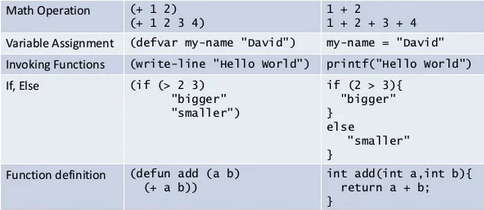
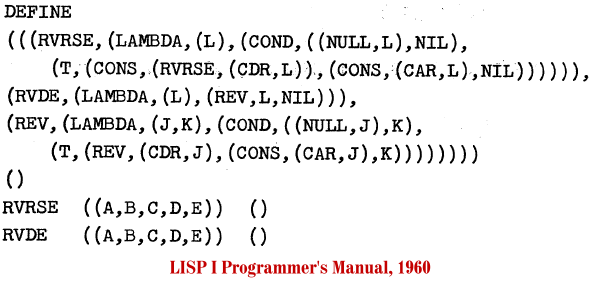

Stands for List Processing. It was designed for Artificial Intelligence and it can be used as a Functional-paradigm language.
It was made in the 1950s by John McCarthy.
It's known for leading to many parentheses for relatively simple statements. It consists of atoms and lists.
Several variants exist, such as Scheme, Clojure, and Common Lisp.
Operators use a prefix notation, unlike most non-Functional languages.

Basic LISP syntax.

An example of LISP code where the overabundance of parentheses is evident.